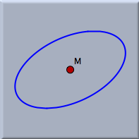
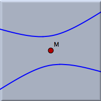

Center

 |  |
| Center of an ellipse | Center of a hyperbola |
Synopsis
Select a conic and construct its center.
Caution
This mode is not properly supported in non-Euclidean geometries. It always constructs the Euclidean center.
Page last modified on Thursday 28 of July, 2011 [08:09:37 UTC].
The original document is available at
http://doc.cinderella.de/tiki-index.php?page=Center